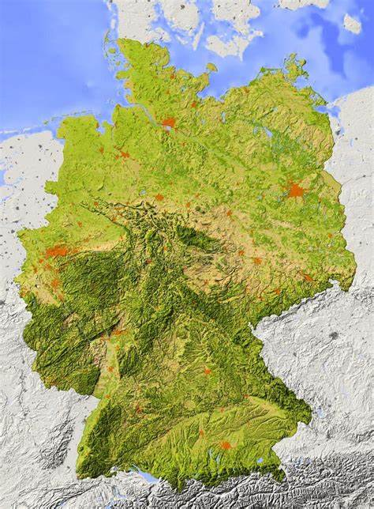
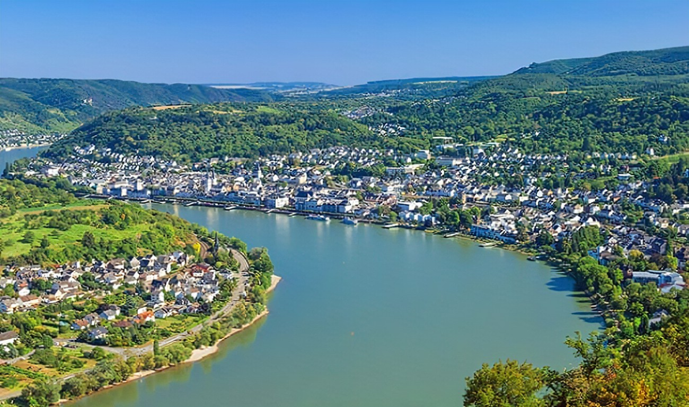
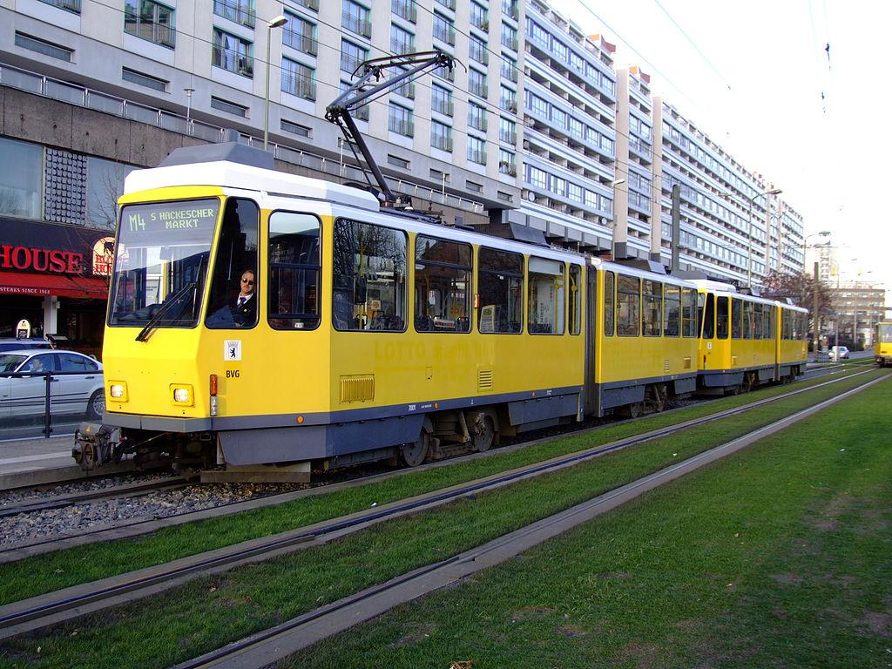

Geografia e Clima
A Alemanha é um país situado na Europa Central e é conhecida por sua diversidade geográfica.
Localização: A Alemanha faz fronteira com nove países, incluindo a França, a Áustria, a Dinamarca e a Polônia. Ela está situada no coração da Europa.
Relevo:O país apresenta uma variedade de relevo, desde as planícies no norte até as montanhas no sul. As montanhas dos Alpes estão localizadas na região sul, enquanto as planícies da Europa Central dominam o norte.

Rio Reno:O Rio Reno é um dos principais rios da Alemanha e desempenha um papel importante na geografia e economia do país. Ele atravessa várias cidades importantes, como Colônia e Bonn, antes de formar parte da fronteira ocidental com a França.

Mares e Oceanos:A Alemanha tem acesso ao Mar do Norte e ao Mar Báltico, o que a torna um importante centro para o comércio marítimo.
Clima:O clima da Alemanha varia de região para região. O norte possui um clima temperado oceânico, com invernos suaves e verões frescos. No sul, especialmente nas áreas montanhosas, o clima é alpino, com invernos frios e verões suaves.
Recursos Naturais:A Alemanha é rica em recursos naturais, incluindo florestas, solos férteis e minerais como carvão e lignito. Esses recursos desempenham um papel importante na economia do país.
Áreas Urbanas:As principais cidades da Alemanha incluem Berlim (a capital), Munique, Hamburgo e Colônia. Essas áreas urbanas são centros de cultura, política e economia.
Parques Nacionais:A Alemanha abriga vários parques nacionais e áreas de conservação, preservando sua beleza natural e biodiversidade.
População: A Alemanha é o país mais populoso da União Europeia, com uma população diversificada e uma alta qualidade de vida.
Transporte A geografia favorável da Alemanha contribui para uma extensa rede de transporte, incluindo estradas, ferrovias e rios navegáveis, tornando-a um importante centro de tráfego na Europa.
